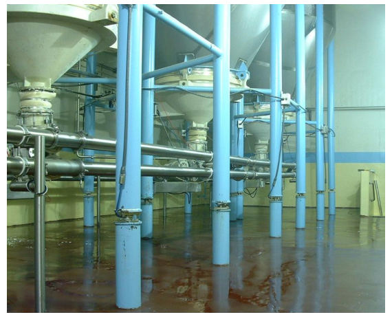
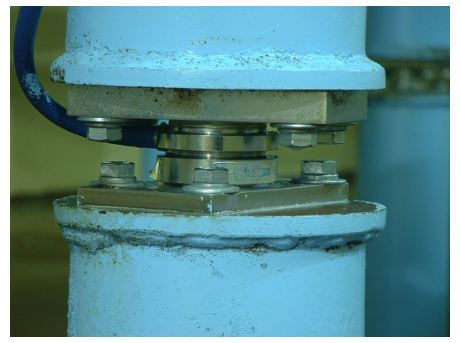
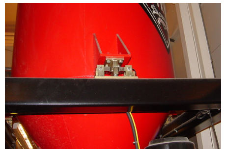
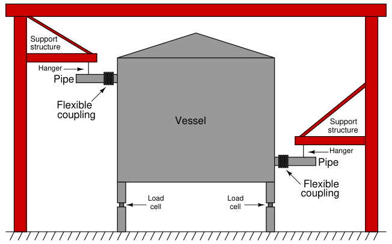

The original, as published: Tony R. Kuphaldt, Lessons In Industrial Instrumentation, Level measurement by weight (load cells). CC BY 4.0, https://creativecommons.org/licenses/by/4.0/. Imported as published, from https://www.ibiblio.org/kuphaldt/socratic/sinst/book/liii.pdf https://www.ibiblio.org/kuphaldt/socratic/sinst/book/liii.pdf
Weight-based level instruments sense process level in a vessel by directly measuring the weight of the vessel. If the vessel’s empty weight (tare weight) is known, process weight becomes a simple calculation of total weight minus tare weight. Obviously, weight-based level sensors can measure both liquid and solid materials, and they have the benefit of providing inherently linear mass storage measurement38. Load cells (strain gauges bonded to a steel element of precisely known modulus) are typically the primary sensing element of choice for detecting vessel weight. As the vessel’s weight changes, the load cells compress or relax on a microscopic scale, causing the strain gauges inside to change resistance. These small changes in electrical resistance become a direct indication of vessel weight. The following photograph shows three bins used to store powdered milk, each one supported by pillars equipped with load cells near their bases:

38Regardless of the vessel’s shape or internal structure, the measurement provided by a weight-sensing system is based on the true mass of the stored material. Unlike height-based level measurement technologies (float, ultrasonic, radar, etc.), no characterization will ever be necessary to convert a measurement of height into a measurement of mass.
A close-up photograph shows one of the load cell units in detail, near the base of a pillar:

When multiple load cells are used to measure the weight of a storage vessel, the signals from all load cell units must be added together (“summed”) to produce a signal representative of the vessel’s total weight. Simply measuring the weight at one suspension point is insufficient39, because one can never be sure the vessel’s weight is distributed equally amongst all the supports.
39If we happened to know, somehow, that the vessel’s weight was in fact equally shared by all supports, it would be sufficient to simply measure stress at one support to infer total vessel weight. In such an installation, assuming three supports, the total vessel weight would be the stress at any one support multiplied by three.
This next photograph shows a smaller-scale load cell installation used to measure the quantity of material fed into a beer-brewing process40:

Weight-based measurements are often employed where the true mass of a quantity must be ascertained, rather than the level. So long as the material’s density is a known constant, the relationship between weight and level for a vessel of constant cross-sectional area will be linear and predictable. Constant density is not always the case, especially for solid materials, and so weight-based inference of vessel level may be problematic. In applications where batch mass is more important than height (level), weight-based measurement is often the preferred method for portioning batches. You will find weight-based portion measurements used frequently in the food processing industries (e.g. consistently filling bags and boxes with product), and also for custody transfer of certain materials (e.g. coal and metal ore).
40The particular “micro-brewery” process shown here is at the Pike’s Place Market in downtown Seattle, Washington. Three load cells measure the weight of a hopper filled with ingredients prior to brewing in the “mash tun” vessel.
One very important caveat for weight-based level instruments is to isolate the vessel from any external mechanical stresses generated by pipes or machinery. The following illustration shows a typical installation for a weight-based measurement system, where all pipes attaching to the vessel do so through flexible couplings, and the weight of the pipes themselves is borne by outside structures through pipe hangers:

Stress relief is very important because any forces acting upon the storage vessel will be interpreted by the load cells as more or less material stored in the vessel. The only way to ensure that the load cell’s measurement is a direct indication of material held inside the vessel is to ensure that no other forces act upon the vessel except the gravitational weight of the material. A similar concern for weight-based batch measurement is vibration produced by machinery surrounding (or on) the vessel. Vibration is nothing more than oscillatory acceleration, and the acceleration of any mass produces a reaction force (F = ma). Any vessel suspended by weightsensing elements such as load cells will induce oscillating forces on those load cells if shaken by vibration. This concern in particular makes it quite difficult to install and operate agitators or other rotating machinery on a weighed vessel41.
An interesting problem associated with load cell measurement of vessel weight arises if there are ever electric currents traveling through the load cell(s). This is not a normal state of affairs,
41One practical solution to this problem is to shut down the source of vibration (e.g. agitator motor, pump, etc.) for a long enough time to take a sample weight measurement, then run the machine again between measurements. So long as intermittent weight measurement is adequate for the needs of the process, the interference of machine vibration may be dealt with in this manner.
but it can happen if maintenance workers incorrectly attach arc welding equipment to the support structure of the vessel, or if certain electrical equipment mounted on the vessel such as lights or motors develop ground faults. The electronic amplifier circuits interpreting a load cell’s resistance will detect voltage drops created by such currents, interpreting them as changes in load cell resistance and therefore as changes in material level. Sufficiently large currents may even cause permanent damage to load cells, as is often the case when the currents in question are generated by arc welding equipment.
A variation on this theme is the so-called hydraulic load cell which is a piston-and-cylinder mechanism designed to translate vessel weight directly into hydraulic (liquid) pressure. A normal pressure transmitter then measures the pressure developed by the load cell and reports it as material weight stored in the vessel. Hydraulic load cells completely bypass the electrical problems associated with resistive load cells, but are more difficult to network for the calculation of total weight (using multiple cells to measure the weight of a large vessel).